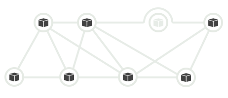
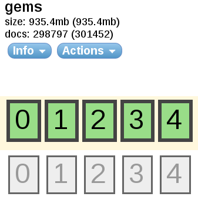
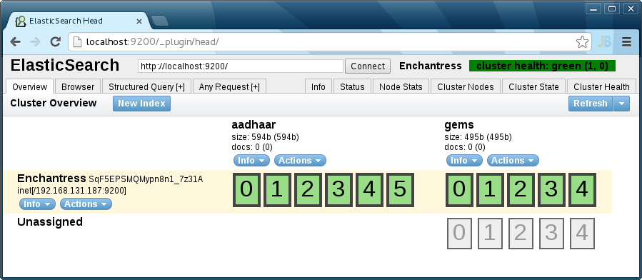

Learning ElasticSearch
Fifth Elephant 2013, Bangalore.
http://xinh.org/5el
Also available at
ElasticWho?
ElasticSearch is a flexible and powerful open source, distributed real-time search and analytics engine.

Features
- Real time analytics
- Distributed
- High availability
- Multi tenant architecture
- Full text
- Document oriented
- Schema free
- RESTful API
- Per-operation persistence
Distributed
Start small and scale horizontally out of the box. For more capacity, just add more nodes and let the cluster reorganize itself.
High Availability

ElasticSearch clusters detect and remove failed nodes, and reorganize themselves.
Multi Tenancy
$ curl -XPUT http://localhost:9200/people
$ curl -XPUT http://localhost:9200/gems
$ curl -XPUT http://localhost:9200/gems/document/pry-0.5.9
$ curl -XGET http://localhost:9200/gems/document/pry-0.5.9
A cluster can host multiple indices which can be queried independently, or as a group.
Document Oriented
{
"_id": "pry-0.5.9",
"_index": "gems",
"_source": {
"authors": [
"John Mair (banisterfiend)"
],
"autorequire": null,
"bindir": "bin",
"cert_chain": [],
"date": "Sun Feb 20 11:00:00 UTC 2011",
"default_executable": null,
"description": "attach an irb-like session to any object at runtime",
"email": "jrmair@gmail.com"
}
}
Store complex real world entities in Elasticsearch as structured JSON documents.
RESTful API
Almost any operation can be performed using a simple RESTful interface using JSON over HTTP.
- curl -X GET
- curl -X PUT
- curl -X POST
- curl -X DELETE
Apache Lucene
ElasticSearch is built on top of Apache Lucene. Lucene is a high performance, full-featured Information Retrieval library, written in Java.

ElasticSearch Terminology
Document
$ curl -XGET http://localhost:9200/gems/document/pry-0.5.9
{
"_id": "pry-0.5.9",
"_index": "gems",
"_source": {
"authors": [
"John Mair (banisterfiend)"
],
"autorequire": null,
"bindir": "bin",
"cert_chain": [],
"date": "Sun Feb 20 11:00:00 UTC 2011",
"default_executable": null,
"description": "attach an irb-like session to any object at runtime",
"email": "jrmair@gmail.com",
"executables": [
"pry"
],
"extensions": [],
"extra_rdoc_files": [],
"files": [
"lib/pry/commands.rb",
"lib/pry/command_base.rb",
"lib/pry/completion.rb",
"lib/pry/core_extensions.rb",
"lib/pry/hooks.rb",
"lib/pry/print.rb",
"lib/pry/prompts.rb",
"lib/pry/pry_class.rb",
"lib/pry/pry_instance.rb",
"lib/pry/version.rb",
"lib/pry.rb",
"examples/example_basic.rb",
"examples/example_commands.rb",
"examples/example_command_override.rb",
"examples/example_hooks.rb",
"examples/example_image_edit.rb",
"examples/example_input.rb",
"examples/example_input2.rb",
"examples/example_output.rb",
"examples/example_print.rb",
"examples/example_prompt.rb",
"test/test.rb",
"test/test_helper.rb",
"CHANGELOG",
"LICENSE",
"README.markdown",
"Rakefile",
".gemtest",
"bin/pry"
],
"has_rdoc": true,
"homepage": "http://banisterfiend.wordpress.com",
"id": "pry-0.5.9",
"licenses": [],
"name": "pry",
"platform": "ruby",
"post_install_message": null,
"rdoc_options": [],
"require_paths": [
"lib"
],
"requirements": [],
"rubyforge_project": null,
"rubygems_version": "1.5.2",
"signing_key": null,
"specification_version": 3,
"summary": "attach an irb-like session to any object at runtime",
"test_files": [],
"version": {
"prerelease": null,
"version": "0.5.9"
}
},
"_type": "document",
"_version": 1,
"exists": true
}
In ElasticSearch, everything is stored as a Document. Document can be addressed and retrieved by querying their attributes.
Document Types
Lets us specify document properties, so we can differentiate the objects.
Shard
Each Shard is a separate native Lucene Index. Lets us overcome RAM limitations, hard disk capacity.
Replica
An exact copy of primary Shard. Helps in setting up HA, increases query throughput.
Index
ElasticSearch stores its data in logical Indices. Think of a table, collection or a database.

An Index has atleast 1 primary Shard, and 0 or more Replicas.
Cluster
A collection of cooperating ElasticSearch nodes. Gives better availability and performance via Index Sharding and Replicas.
ElasticSearch Workshop
Download and start
Download ElasticSearch from http://www.elasticsearch.org/download
# service elasticsearch start
# /etc/init.d/elasticsearch start
# ./bin/elasticsearch -f
ElasticSearch Plugins
A site plugin to view contents of ElasticSearch cluster.
# cd /usr/share/elasticsearch
# ./bin/plugin -install mobz/elasticsearch-head
# cd /opt/elasticsearch-0.90.2
# ./bin/plugin -install mobz/elasticsearch-head
Restart ElasticSearch. Plugins are detected and loaded on service startup.
elasticsearch-head
RESTful interface
$ curl -XGET 'http://localhost:9200/'
{
"ok" : true,
"status" : 200,
"name" : "Drake, Frank",
"version" : {
"number" : "0.90.2",
"snapshot_build" : false,
"lucene_version" : "4.3.1"
},
"tagline" : "You Know, for Search"
}
Create Index
$ curl -XPUT 'http://localhost:9200/gems'
{
"ok":true,
"acknowledged":true
}
Cluster status
$ curl -XGET 'localhost:9200/_status'
{"ok":true,"_shards":{"total":20,"successful":10,"failed":0},
"indices":{"gems":{"index":{"primary_size":"495b","primary_size_in_bytes":495,
"size":"495b","size_in_bytes":495},"translog":{"operations":0},
"docs":{"num_docs":0,"max_doc":0,"deleted_docs":0},"merges":
{"current":0,"current_docs":0,"current_size":"0b","current_size_in_bytes":0,
"total":0,"total_time":"0s","total_time_in_millis":0,"total_docs":0,
"total_size":"0b","total_size_in_bytes":0},
...
...
...
Pretty Output
$ curl -XGET 'localhost:9200/_status?pretty'
$ curl -XGET 'localhost:9200/_status' | python -mjson.tool
$ curl -XGET 'localhost:9200/_status' | json_reformat
{
"ok": true,
"_shards": {
"total": 20,
"successful": 10,
"failed": 0
},
"indices": {
"gems": {
"index": {
"primary_size": "495b",
"primary_size_in_bytes": 495,
"size": "495b",
"size_in_bytes": 495
},
...
Delete Index
$ curl -XDELETE 'http://localhost:9200/gems'
{
"ok":true,
"acknowledged":true
}
Create custom Index
{
"settings" : {
"index" : {
"number_of_shards" : 6,
"number_of_replicas" : 0
}
}
}
$ curl -XPUT 'http://localhost:9200/gems' -d @body.json
{
"ok":true,
"acknowledged":true
}
Index a document
{
"name": "pry",
"platform": "ruby",
"rubygems_version": "1.5.2",
"description": "attach an irb-like session to any object at runtime",
"email": "anurag@example.com",
"has_rdoc": true,
"homepage": "http://banisterfiend.wordpress.com"
}
$ curl -XPOST 'http://localhost:9200/gems/test/' -d @body.json
{
"ok":true,
"_index":"gems",
"_type":"test",
"_id":"lsJgxiwET6eg",
"_version":1
}
Get document
$ curl -XGET 'http://localhost:9200/gems/test/lsJgxiwET6eg' | python -mjson.tool
{
"_id": "lsJgxiwET6eg",
"_index": "gems",
"_source": {
"description": "attach an irb-like session to any object at runtime",
"email": "anurag@example.com",
"has_rdoc": true,
"homepage": "http://banisterfiend.wordpress.com",
"name": "pry",
"platform": "ruby",
"rubygems_version": "1.5.2"
},
"_type": "test",
"_version": 1,
"exists": true
}
Index another document
{
"name": "grit",
"platform": "jruby",
"rubygems_version": "2.5.0",
"description": "Ruby library for extracting information from a git repository.",
"email": "mojombo@github.com",
"has_rdoc": false,
"homepage": "http://github.com/mojombo/grit"
}
$ curl -XPOST 'http://localhost:9200/gems/test/' -d @body.json
{
"ok":true,
"_index":"gems",
"_type":"test",
"_id":"ijUOHi2cQc2",
"_version":1
}
Custom Document IDs
{
"name": "grit",
"platform": "jruby",
"rubygems_version": "2.5.1",
"description": "Ruby library for extracting information from a git repository.",
"email": "mojombo@github.com",
"has_rdoc": false,
"homepage": "http://github.com/mojombo/grit"
}
$ curl -XPUT 'http://localhost:9200/gems/test/grit-2.5.1' -d @body.json
{
"ok":true,
"_index":"gems",
"_type":"test",
"_id":"grit-2.5.1",
"_version":1
}
IDs are unique across Index. Composed of DocumentType and ID.
Document Versions
$ curl -XPUT 'http://localhost:9200/gems/test/grit-2.5.1' -d @body.json
{
"ok":true,
"_index":"gems",
"_type":"test",
"_id":"grit-2.5.1",
"_version":2
}
Searching Documents
{
"query": {
"term": {"name": "pry"}
}
}
$ curl -XPOST http://localhost:9200/gems/_search -d @body.json | python -mjson.tool
{
"_shards": {
"failed": 0,
"successful": 6,
"total": 6
},
"hits": {
"hits": [
{
"_id": "MWkKgzsMRgK",
"_index": "gems",
"_score": 1.4054651,
"_source": {
"description": "attach an irb-like session to any object at runtime",
"email": "anurag@example.com",
"has_rdoc": true,
"homepage": "http://banisterfiend.wordpress.com",
"name": "pry",
"platform": "ruby",
"rubygems_version": "1.5.2"
},
"_type": "test"
}
],
"max_score": 1.4054651,
"total": 1
},
"timed_out": false,
"took": 2
}
Counting Documents
{
"term": {"name": "pry"}
}
$ curl -XGET http://localhost:9200/gems/test/_count -d @body.json
{
"_shards": {
"failed": 0,
"successful": 6,
"total": 6
},
"count": 1
}
Update a Document
{
"doc": {
"platform": "macruby"
}
}
$ curl -XPOST http://localhost:9200/gems/test/grit-2.5.1/_update -d @body.json
{
"ok":true,
"_index":"gems",
"_type":"test",
"_id":"grit-2.5.1",
"_version":4
}
The partial document is merged using simple recursive merge.
Update via Script
{
"script" : "ctx._source.platform = vm_name",
"params" : {
"vm_name" : "rubinius"
}
}
$ curl -XPOST http://localhost:9200/gems/test/grit-2.5.1/_update -d @body.json
{
"ok":true,
"_index":"gems",
"_type":"test",
"_id":"grit-2.5.1",
"_version":5
}
Delete Document
$ curl -XDELETE 'http://localhost:9200/gems/test/grit-2.5.1'
{
"ok":true,
"found":true,
"_index":"gems",
"_type":"test",
"_id":"grit-2.5.1",
"_version":6
}
Put Mapping
{
"gem" : {
"properties" : {
"name" : {"type" : "string", "index": "not_analyzed"},
"platform" : {"type" : "string", "index": "not_analyzed"},
"rubygems_version" : {"type" : "string", "index": "not_analyzed"},
"description" : {"type" : "string", "store" : "yes"},
"has_rdoc" : {"type" : "boolean"}
}
}
}
$ curl -XPUT 'http://localhost:9200/gems/gem/_mapping' -d @body.json
$ curl -XGET 'http://localhost:9200/gems/_mapping' | python -mjson.tool
Index Document with Mapping
{
"name": "grit",
"platform": "ruby",
"rubygems_version": "2.5.1",
"description": "Ruby library for extracting information from a git repository.",
"email": "mojombo@github.com",
"has_rdoc": false,
"homepage": "http://github.com/mojombo/grit"
}
$ curl -XPUT 'http://localhost:9200/gems/gem/grit-2.5.1' -d @body.json
{
"ok":true,
"_index":"gems",
"_type":"gem",
"_id":"grit-2.5.1",
"_version":1
}
Matching documents
{
"query": {
"match" : {
"description" : "git repository"
}
}
}
$ curl -XPOST http://localhost:9200/gems/gem/_search -d @body.json
Highlighting
{
"query": {
"match" : {
"description" : "git repository"
}
},
"highlight" : {
"fields" : {
"description" : {}
}
}
}
$ curl -XPOST http://localhost:9200/gems/gem/_search -d @body.json
"highlight": {
"description": [
"Ruby library for extracting information from a git repository."
]
}
Search Facets
{
"query": { "match_all" : {} },
"facets" : {
"gem_names" : {
"terms" : { "field": "name" }
}
}
}
$ curl -XPOST http://localhost:9200/gems/_search -d @body.json
...
"facets": {
"gem_names": {
"_type": "terms",
"missing": 0,
"other": 0,
"terms": [
{
"count": 2,
"term": "pry"
},
{
"count": 2,
"term": "grit"
},
{
"count": 1,
"term": "abc"
}
],
"total": 5
}
},
"hits": {
"hits": [
...
(Lab)
Analyzing Aadhaar's Datasets
Download Public Dataset
Download from Aadhaar Public Data Portal at https://data.uidai.gov.in
Download Tools
$ git clone https://github.com/gnurag/aadhaar
Prepare Data & Configure
# gem install yajl-ruby tire activesupport
$ git clone https://github.com/gnurag/aadhaar
$ cd aadhaar/data
$ unzip UIDAI-ENR-DETAIL-20121001.zip
$ cd ../bin
$ vi aadhaar.rb
Configuration
AADHAAR_DATA_DIR = "/path/to/aadhaar/data"
ES_URL = "http://localhost:9200"
ES_INDEX = 'aadhaar'
ES_TYPE = "UID"
BATCH_SIZE = 1000
Index
$ ruby aadhaar.rb
Running Examples
$ curl -XPOST http://localhost:9200/aadhaar/UID/_search -d @template.json | python -mjson.tool
Additional Notes
Index Aliases
Group multiple Indexes, and query them together.
curl -XPOST 'http://localhost:9200/_aliases' -d '
{
"actions" : [
{ "add" : { "index" : "index1", "alias" : "master-alias" } }
{ "add" : { "index" : "index2", "alias" : "master-alias" } }
]
}'
curl -XPOST 'http://localhost:9200/_aliases' -d '
{
"actions" : [
{ "remove" : { "index" : "index2", "alias" : "master-alias" } }
]
}'
Document Routing
Control which Shard the document will be placed and queried from.
Parents & Children
$ curl -XPUT http://localhost:9200/gems/gem/roxml?parent=rexml -d '{
"tag" : "something"
}'
Custom Analyzers
Boosting Search Results
ElasticSearch Ecosystem
A wide range of site plugins, analyzers, river plugins available from the community.